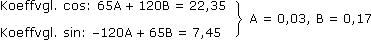

Anhang zu: REIHEN UND INTEGRALTRAFOS
DIFF-INT-METHODEN BEI ZAHLENREIHEN?
Eine Funktion f:

 mit cn = f(n) ist mitunter leichter zu untersuchen als die Folge der cn:
mit cn = f(n) ist mitunter leichter zu untersuchen als die Folge der cn:Zu Aufgabe 2:
Wenn f(x) für zunehmende x monoton gegen 0 läuft, haben das Integral von f(x) und die Summe der f(n) dasselbe Konvergenzverhalten:
Zu Aufgabe 3:
f(x) =
x
x2 + 1
Wenn f(x) monoton fallend ist, sind es auch die f(n):
f'(x) =
1·(x2 + 1) – x·2x
(x2 + 1)2
1 – x2
(x2 + 1)2
Wenn f(x) für zunehmende x gegen 0 läuft, tun dies auch die f(n):
lim
f(x) = lim x—›∞
x
x2 + 1
1
2x
1
∞

Regel von de l'Hospitel
UMORDNUNG VON REIHEN?
Die im Skriptum angesprochene Ausdehnung der "Kompass"-Regel ins Unendliche ist hinsichtlich des Kommutativ-Aspekts so zu verstehen:
Ist  cn absolut konvergent und σ:
cn absolut konvergent und σ:  bijektiv, dann hat die umgeordnete Reihe cσ(n) denselben Grenzwert.
bijektiv, dann hat die umgeordnete Reihe cσ(n) denselben Grenzwert.
cn absolut konvergent und σ: bijektiv, dann hat die umgeordnete Reihe cσ(n) denselben Grenzwert.Beweis:
Da |cn| Cauchy-Folge ist, finden wir zu jedem ε > 0 einen Index N, sodass für alle n > N gilt:
|cn| Cauchy-Folge ist, finden wir zu jedem ε > 0 einen Index N, sodass für alle n > N gilt:ni=1|ci| – Ni=1|ci| = |cN+1| + … + |cn| < ε
Wählen wir jetzt M so groß, dass 1,… N  {σ(1),… σ(M)}, dann gilt für alle n > M:
{σ(1),… σ(M)}, dann gilt für alle n > M:
{σ(1),… σ(M)}, dann gilt für alle n > M:ni=1cσ(i) – ni=1ci ≤ |ci1>N|+|ci2>N|+... < εHERLEITUNG DER TAYLORREIHE?
Im Skriptum haben wir die Taylorkoeffizienten unter der Annahme hergeleitet, dass f(x) in eine Potenzreihe entwickelbar ist. Die folgende Herleitung geht tiefer und liefert auch das n-te Restglied (= Fehler, der durch Abbruch der Reihe nach der n-ten Potenz entsteht). Nachdem eine Potenzreihe im Inneren ihres Konvergenzbereichs beliebig oft differenzierbar ist, muss f(x) diese Eigenschaft mitbringen, die wir jetzt verwenden:
Nach n partiellen Integrationen:
Bem: An der Taylorreihe verblüfft, dass jemand, der alle Ableitungen bei x = a kennt, den Kurvenverlauf über dem gesamten (Konvergenz)Bereich vorhersagen kann. Wieso können wir nicht die Kurve irgendwo nach x = a einfach anders fortsetzen? Antwort: Weil wir sie so fortsetzen müssen, dass sie überall beliebig oft differenzierbar bleibt!
LAGRANGE'SCHE RESTGLIEDFORM?
Zwischen a und x finden wir immer eine Stelle ξ, sodass der Taylorkoeffizient an+1, bei ξ statt bei a berechnet, gleich dem Restglied Rn(x) wird.
Beweis:
Im Integrationsbereich sei k der kleinste und K der größte Wert von f(n+1) und (x – u)n ≥ 0 (der Fall ≤ 0 wird entsprechend bewiesen). Dann gilt:
Da f(n+1) zwischen den Stellen mit den Werten k und K – weil stetig – auch alle Zwischenwerte annimmt, gibt es ein ξ zwischen a und x, sodass:
FOURIERINTEGRALE?
Dass im Skriptum die Laplace-Transformation scheinbar zusammenhangslos auf Fourierreihen folgt, ist einem "missing link" geschuldet: Auch eine nichtperiodische Funktion f(t) können wir über einem endlichen Intervall in eine Fourierreihe entwicklen, indem wir so tun, als ob die Funktion außerhalb davon periodisch weiterläuft.
Um die Funktion f(t) überall zu entwickeln, brauchen wir jetzt nur mehr das Intervall auszudehnen:
Das Ergebnis heißt Fourier-Integral von f(t), und das, was darin als F(ω) abgekürzt wurde, Fourier-Transformierte von f(t):
INTEGRALSATZ FÜR LAPLACE-TRANSFORMATIONEN?
Ableitungssatz:
Ergänzung zu Aufgabe 12:
Eine weitere Lösungsvariante schaut so aus, dass wir – wie gehabt – die DG aufstellen und diese auf herkömmliche Art lösen:
Aufgabe: Bestimme i(t) für die folgende Schaltung, wenn u(t) = 149sin120t V und uC(0) = 0.
R1 = 800 Ω
R2 = 500 Ω
C = 50 μF
R2 = 500 Ω
C = 50 μF
Schritt 1: DG aufstellen
uR1 + uC = u (.)
d
dt
uR1' + uC' = u' uR1 = R1i, i3 = CuC', i3 = i–i2
R1i' + = u' ·C uR2 = R2i2, uR2 = u–uR1
i – i2
C
R1Ci' + i – = Cu' ·R2
u – R1i
R2
R1R2Ci' + (R1+R2)i = u + R2Cu'
20i' + 1300i = 149sin120t + 447cos120t |:20
i' + 65i = 22,35cos120t + 7,45sin120t
Schritt 2: eλt-Ansatz verkürzte DG
verkürzte DG
λeλt + 65eλt = 0 λ = –65
+ 65eλt = 0 λ = –65
+ 65eλt = 0 λ = –65yh = ce–65t mit c
Schritt 3: Ansatz à la Störfunktion
ip = Acos120t + Bsin120t
vollständige DG:-120Asin125t + 120Bcos120t + 65Acos120t + 65Bsin120t = 22,35cos120t + 7,45sin120t

Schritt 4: Superpositionsgesetz
i = ip + ih = 0,03cos120t + 0,17sin120t + ce–65t mit c
Schritt 5: Spezielle Lösung
uC = u – R1i = –24cos120t + 13sin120t – 800ce–65t
uC(0) = –24 – 800c = 0 c = –0,03
i = 0,03cos120t + 0,17sin120t – 0,03e–65t